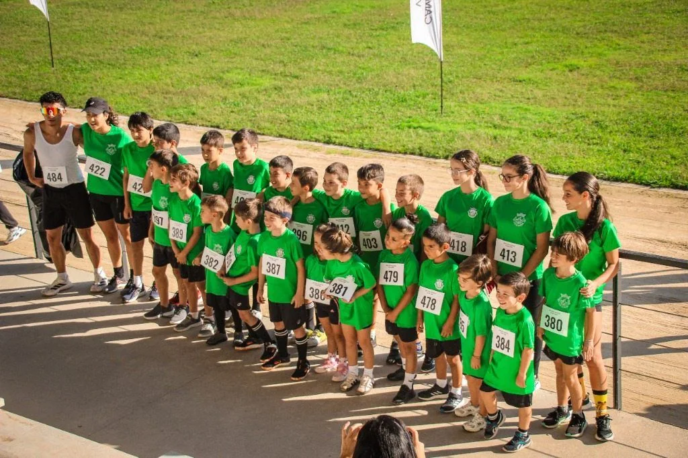

Jogos Inter-Freguesias 2026 / 2027
O portal oficial da AJAVP com o calendário completo de todas as 36 atividades, regulamento oficial de cada modalidade, comunicados homologados da ADCCVC, tabela detalhada de escalões por ano de nascimento e os momentos altos da festa de encerramento.
Grande Festa de Encerramento e Entrega Oficial de Prémios
Manhã no Pavilhão de Mindelo com jogos de futsal entre os vencedores do campeonato e as seleções concelhias. Às 18h00 no Auditório Municipal, entrega solene dos prémios da 40.ª Edição perante entidades autárquicas e atletas de todas as freguesias.

Nota Regulamentar da Organização (ADCCVC): À semelhança do que tem acontecido em anos anteriores, poderá ser necessário proceder a alguns ajustes no calendário das atividades em virtude da utilização dos mesmos espaços por outras entidades ou condições climatéricas. Todas as confirmações de convocatória da AJAVP são emitidas semanalmente aos atletas e encarregados de educação via WhatsApp oficial.